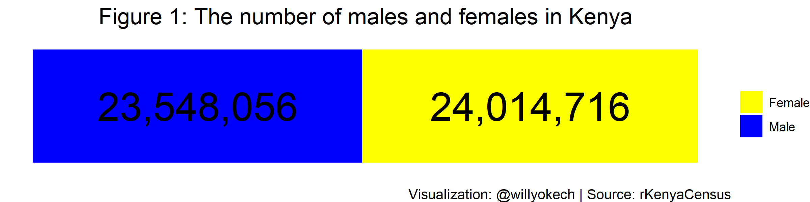
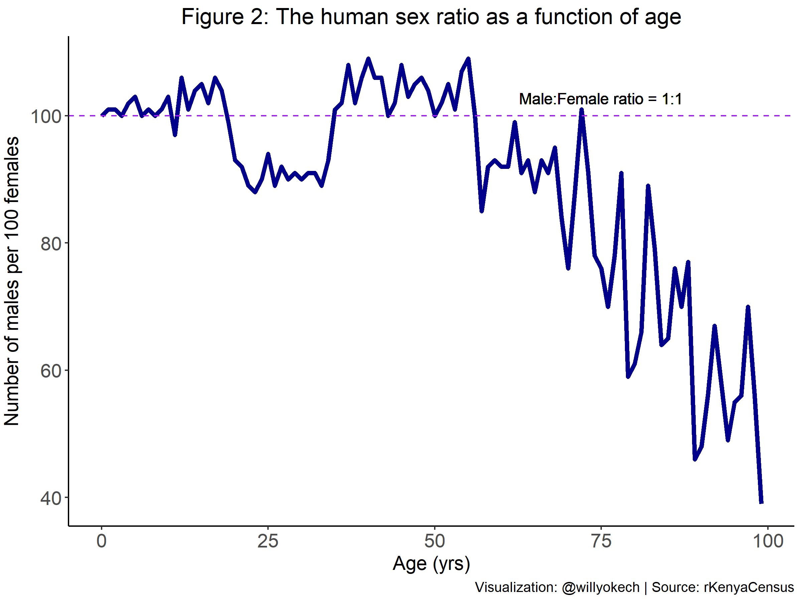
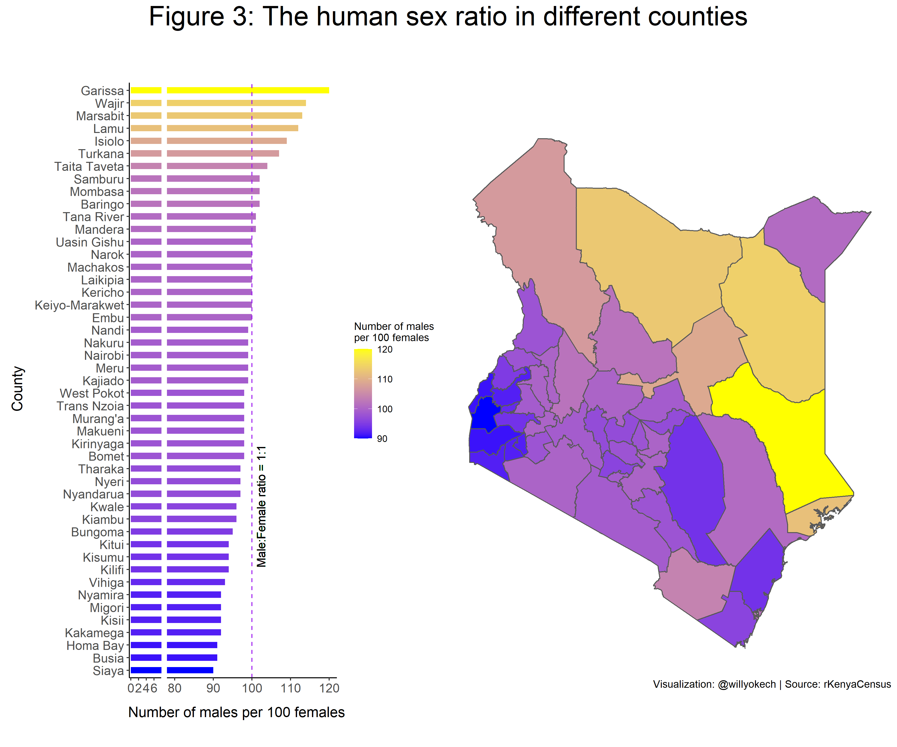
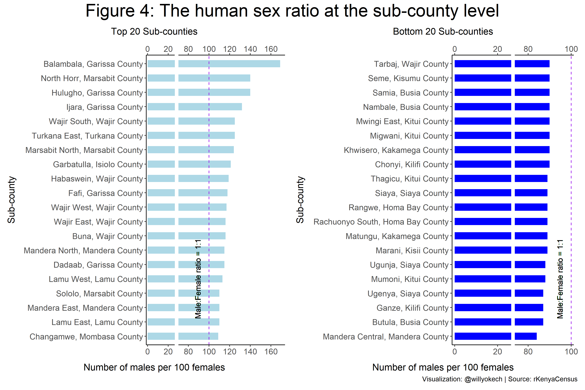

To answer this question, I reviewed the Kenya Population and Housing Census (2019)12 report, which provides data on population by sex and age at the county and sub-county levels. This analysis was inspired by Rose Mintzer-Sweeney’s article “Sex and the Census,” published on the Datawrapper website 3.
Various biological, cultural, public health, and economic factors can influence the global human sex ratio. For instance, at birth, the human sex ratio is “male-biased,” with approximately 105 males born per 100 girls. However, with increasing age, the susceptibility to infectious diseases, sex-selective abortions, and higher life expectancies for women can cause fluctuations in the human sex ratio4. The total Kenyan population in 2019 (according to the census) was 47,564,296. When I compared the number of males to females at the national level (Figure 1), I found that there were 98 males for every 100 females in the country5.

Knowing there were more females than males, I sought to determine whether these differences persisted across all age groups (Figure 2).

As expected, I observed a higher number of males compared with females between 0 to 18 years. One reason could be the higher male-to-female ratio seen at birth globally6. Between the ages of 19 to 34 years, the male-to-female ratio decreases rapidly, while from 35 to 56 years, the ratio increases rapidly. The cause of this fluctuation is not apparent, but various public health factors may be responsible for the shifts observed within these age groups. Finally, the number of males compared with females steadily decreases after age 60. One reason for this could be the prevalence of medical conditions that disproportionately affect men. Additionally, the decrease in the number of males to females could result from increases in life expectancy favoring women, as demonstrated by the Economic Survey 2022, which shows that the male life expectancy is 60.6 vs. 66.5 for females7.
By focusing on the national human sex ratio, we may assume that the male-to-female ratio across all the regions in Kenya is equal. Kenya has 47 diverse counties with different population densities, climatic conditions, economic opportunities, and levels of development. Not surprisingly, we find (Figure 3) that there is a wide range of human sex ratios (90–120 males per 100 females) across the different counties (administrative units).

The highest sex ratio is found in Garissa county (120 males per 100 females), and the lowest is observed in Siaya county (90 males per 100 females). Many counties with low sex ratios (more females) are primarily located in the west of Kenya, and counties with high sex ratios (more males) are found in the north of Kenya. According to the Economic Survey (2022) [^8], male life expectancy in the west of Kenya is the lowest in the country. Homa Bay and Migori recorded a life expectancy of 50.5 years, which was approximately 10 years lower than that of females in the respective counties. This is against a difference of 3 to 5 years lower for males in some of the counties in the north of Kenya.
Within each of Kenya’s 47 counties are smaller administrative units known as sub-counties. For the final analysis, I thought it would be interesting to see whether the patterns observed at the county level were consistent across the various sub-counties.

Having just observed that counties in the north of Kenya had the highest number of males per 100 females, I was surprised to find that Mandera Central (Mandera County) and Tarbaj (Wajir County) sub-counties in the north were among the sub-counties with the lowest number of males per 100 females (Figure 4). Why females tend to concentrate within specific regions in these two counties may be an interesting aspect to investigate in future studies.
Overall, many factors may affect the human sex ratio at the county and sub-county levels and cause the differences in the human sex ratio seen with age. High rural-urban migration, public health factors (including the prevalence of various communicable and non-communicable diseases), climate, and location’s primary source of employment may skew the number of males to females in certain sub-counties. Therefore, future investigations should focus on the causes of these variations in the human sex ratio and the implications for administrative planning at the national, county, and sub-county levels.
Footnotes
Kenya National Bureau of Statistics. The 2019 Kenya Population and Housing Census. Volume I: Population by County and Sub-County and Volume III: Distribution of Population by Age and Sex.↩︎
Shelmith Kariuki (2020). rKenyaCensus: 2019 Kenya Population and Housing Census Results. R package version 0.0.2.↩︎
Rose Mintzer-Sweeney’s article: https://blog.datawrapper.de/gender-ratio-american-history/↩︎
Hannah Ritchie and Max Roser (2019) - “Gender Ratio.” Published online at OurWorldInData.org. Retrieved from: ‘https://ourworldindata.org/gender-ratio’ [Online Resource]↩︎
Additionally, there were also 1,524 individuals classified as intersex, but their low numbers prevented their inclusion in the analysis.↩︎
Hannah Ritchie and Max Roser (2019) - “Gender Ratio.” Published online at OurWorldInData.org. Retrieved from: ‘https://ourworldindata.org/gender-ratio’ [Online Resource]↩︎
Kenya National Bureau of Statistics. The Economic Survey 2022↩︎